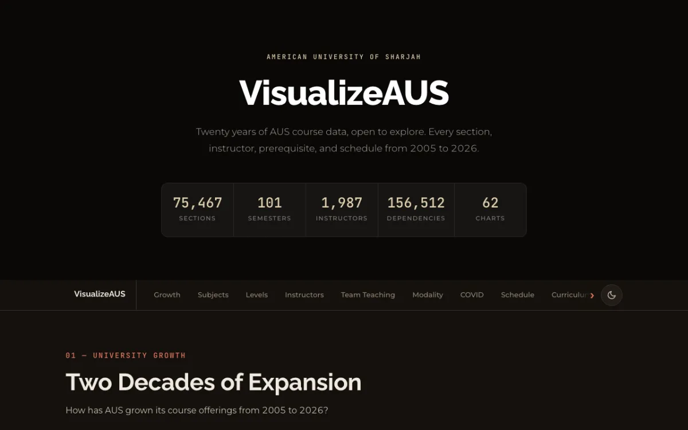
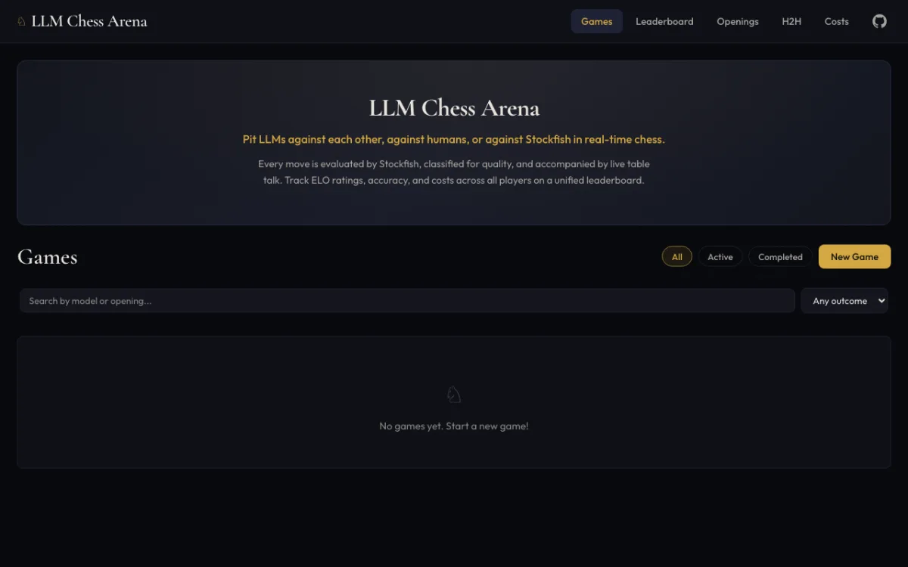
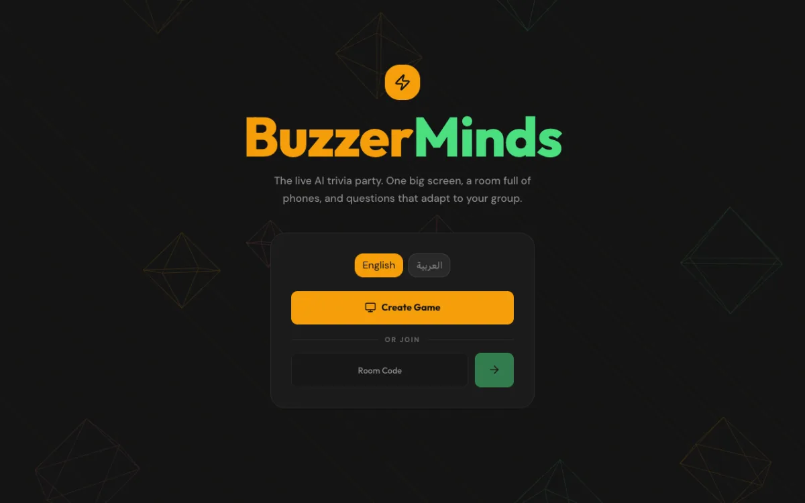

youssef@deadpackets:~$ ls ~/projects
Things I’ve built
in public
Youssef Awad, cybersecurity researcher & developer and Head of Engineering & Co-Founder at CTFae. This is where my public work lives: security tooling, AI/LLM experiments, data work, and a bit of retro fun.
~/featured
Featured showcase
4 worth a closer look
-

Live -

Live -

Live~/BuzzerMindsA trivia show where every question is AI-generated, but grounded in real facts.
Demo Private -
Live
~/projects
The project directory
13 projects total
More projects
active · recent-
~/DOSArchive 1Live
An archive of my dad Yasser Awad’s old DOS programs, playable right in your browser.
-
~/InfoSteal 8Live
A web server that gathers as much information as it can about anyone who visits it.
-
~/AUSCrawl 3
A crawler for AUS’s Banner page, and a solid playground for data science.
-
~/PiCodeReview
Agentic, multi-tier code reviewer: cheap-model specialist hunters verified by a frontier-model judge.
Earlier work
legacy · archivedOlder builds from my high-school and early-university days. I keep them around for posterity.
-
~/pwnbox 14 LegacyLive
A Kali-based Docker container pre-loaded with tools, ZSH, and SSH.
-
~/BannerPlus 4 LegacyLive
A Chrome extension adding visual tweaks and speed-ups to AUS’s Banner page.
-
~/CrackTheHack LegacyLive
A collection of interactive demos from my CrackTheHack series.
-
~/HistoryThief 8 LegacyLive
How social engineering plus a few JS/CSS tricks can leak your browser history.
-
~/EmailCheck LegacyLive
A standalone client that checks an email across multiple APIs for breaches.
~/whoami
A little about me
I’m Youssef Awad (a.k.a. DeadPackets), a cybersecurity researcher and developer who likes shipping in public. By day I lead engineering at CTFae, where I’m Head of Engineering and a Co-Founder; the rest of the time I’m breaking, building, and occasionally archiving 30-year-old DOS programs.
They cover offensive security tooling, AI/LLM experiments, data visualization, and a few things I built just because they were fun.
by the numbers
stack & interests